Entrenamiento adaptativo · Ya en el App Store
Un entrenador con forma de algoritmo.
Cada pantalla está pensada en torno a lo que un ciclista serio necesita ver de verdad: recuperación, carga y la siguiente sesión, adaptándose en tiempo real.
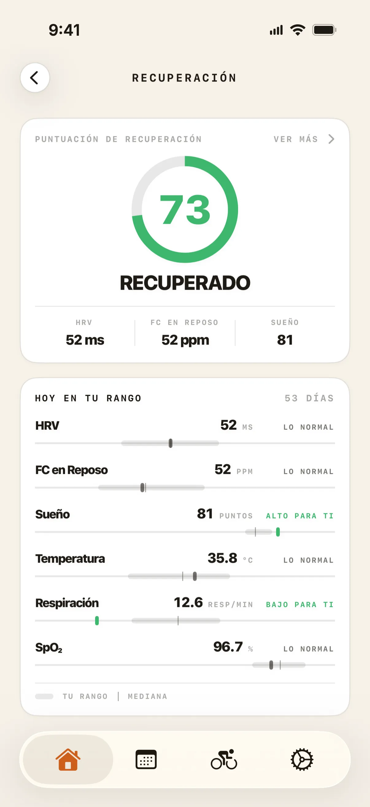


El producto · 10 pantallas
Míralo en acción.
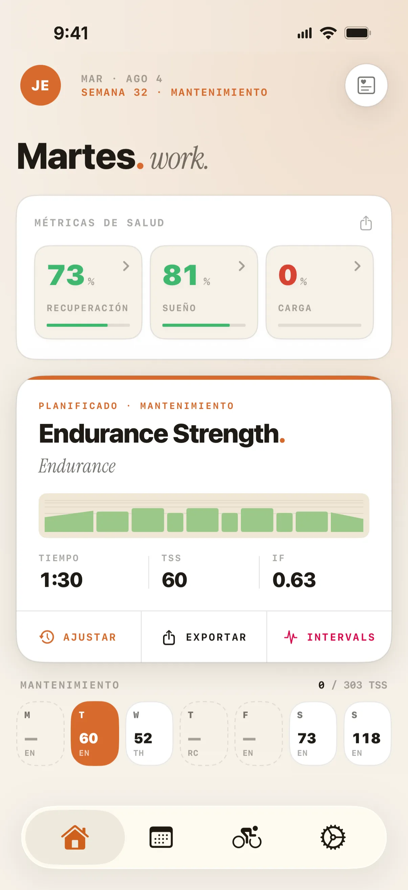
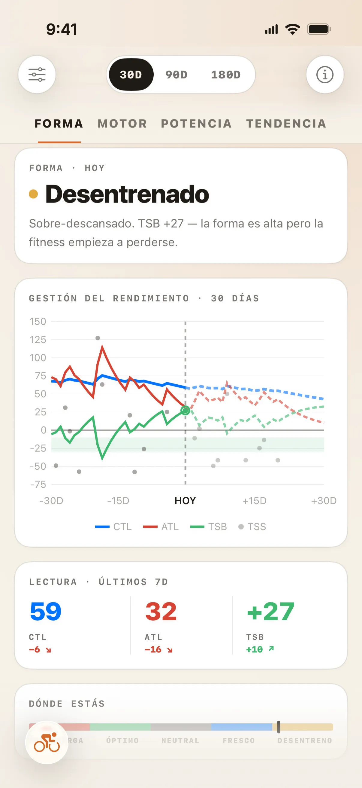
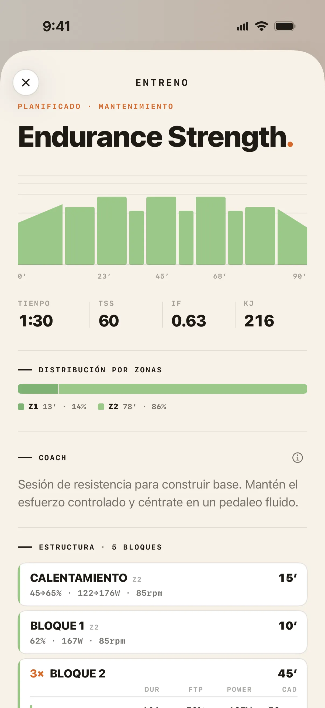
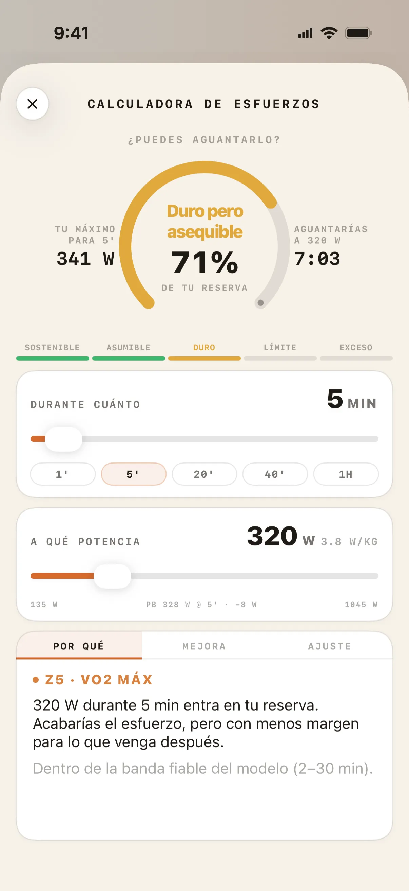

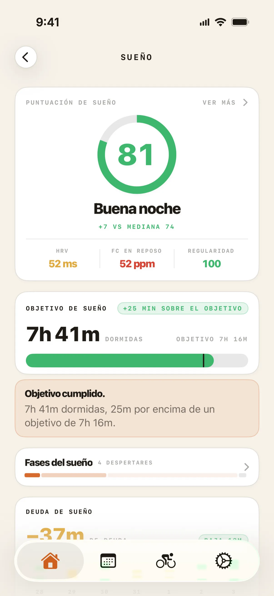
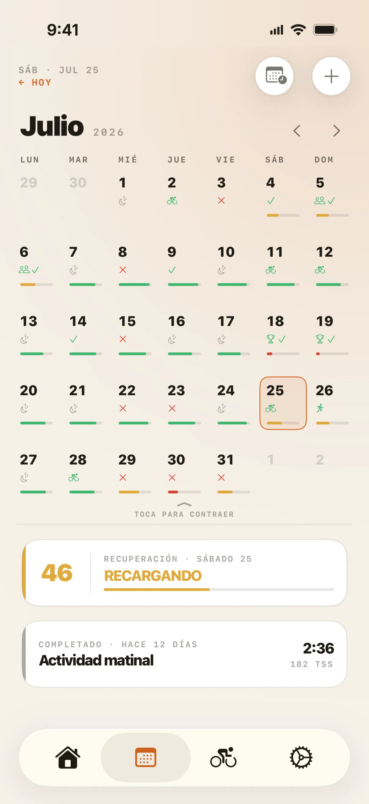
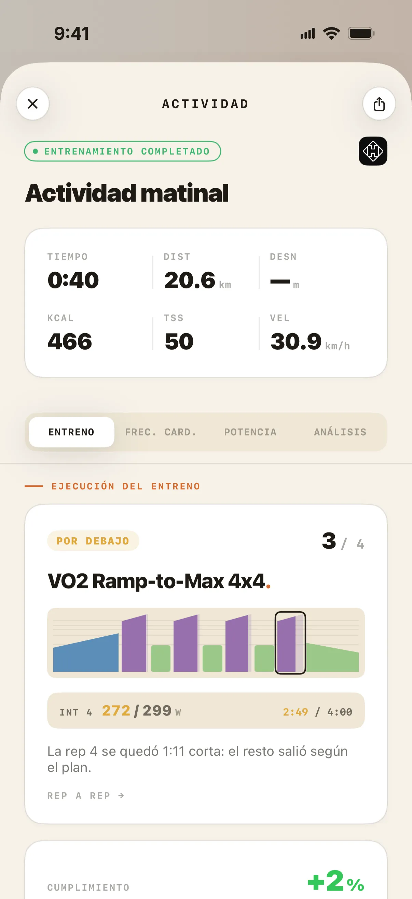
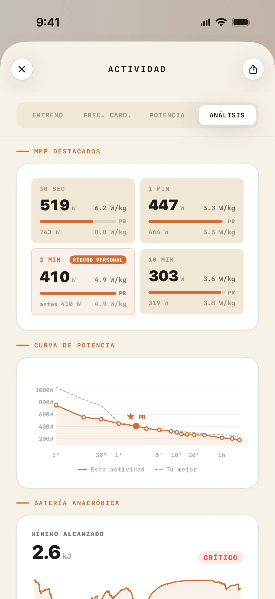
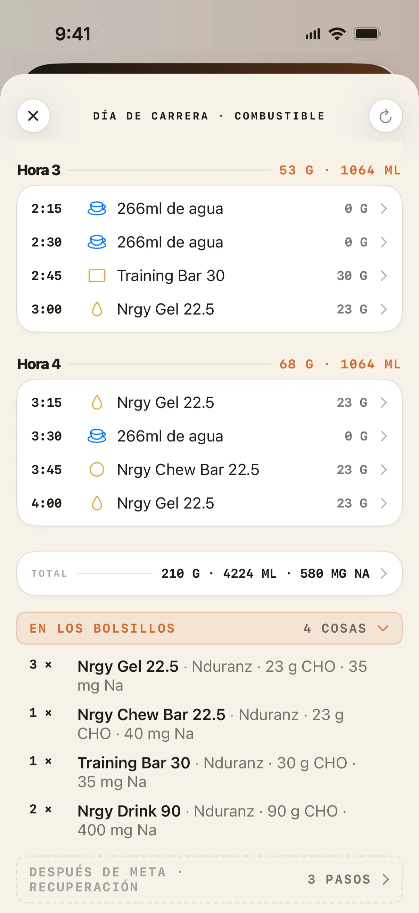
Cómo piensa
Nada de IA. Nada de chatbots. Un entrenador con forma de algoritmo.
Se adapta a tu cuerpo
Lee tu recuperación — en ambos sentidos
Summit lee tu VFC, frecuencia cardíaca en reposo y sueño desde Apple Health. Baja la carga cuando estás cansado, y aprieta cuando estás fino para aprovechar tus mejores ventanas de recuperación. En ambas direcciones, como un buen entrenador.
Se adapta a tu vida
Tú pones el tiempo, Summit pone el plan
Dile a Summit cuánto tiempo tienes cada día. ¿Hoy no hay hueco? No se rompe nada. ¿Se abre uno? Replanifica. Y cada recomendación remite a una regla de la ciencia del deporte y a tus datos reales, nunca a una caja negra.
Gratis para siempre
Tu recuperación y tu sueño, gratis para siempre.
Si eres ciclista y ya llevas un Apple Watch, Summit lee lo que tu reloj mide cada noche y te lo devuelve interpretado. Lo que otras apps cobran cada mes, con el reloj que ya tienes.
No es una prueba de 14 días. Es el nivel gratuito.
- Recuperación diaria. VFC, frecuencia cardíaca en reposo y sueño, leídos desde Apple Health — la puntuación de hoy y el detalle que hay detrás.
- Sueño, con el porqué. No solo la puntuación: qué noche has tenido, qué la explica y el desglose completo de ambas cosas.
- Tu tendencia. Treinta días de recuperación, para leer la dirección y no solo el número de hoy.
- Cada salida que haces. Strava, Hammerhead Karoo y Apple Health importan tus salidas solos, con el mapa de la ruta, las estadísticas y el perfil de desnivel de cada una — y una tarjeta para compartir cuando merece la pena enseñarla.
- La forma de tu semana. El tipo de sesión del día, su duración y la fase de entrenamiento en la que estás, en un calendario que lleva tus carreras, concentraciones y vacaciones.
- Widgets. Recuperación, sueño y carga en la pantalla de inicio y de bloqueo, sin abrir la app.
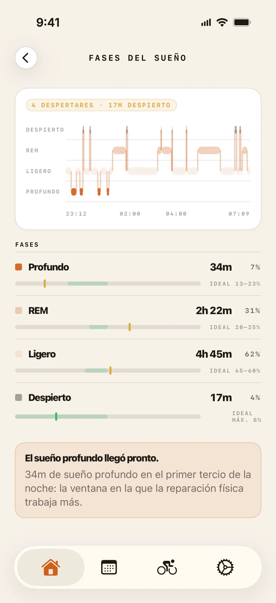
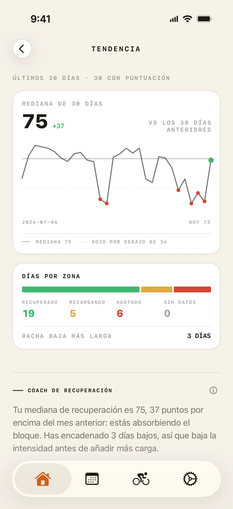
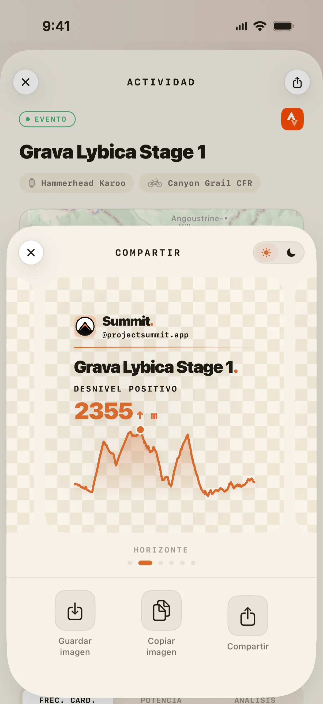
Cómo empezar
De la descarga a tu primer plan.
Descárgala y ábrela
Gratis en el App Store, iPhone con iOS 26 o posterior. Sin tarjeta y sin cuenta atrás de prueba.
Conecta Strava y Apple Health
Tus rodadas se importan solas en cuanto terminas una. La VFC, la frecuencia cardíaca en reposo y el sueño se leen desde Apple Health — desde un Apple Watch, o cualquier wearable que escriba ahí, aunque solo el Apple Watch escribe el conjunto completo.
Dile cómo es tu semana
Cuánto tiempo tienes de verdad y el evento al que apuntas. El plan se construye alrededor de eso.
Rueda. Summit sigue el ritmo.
La recuperación y tu disponibilidad mueven el plan solas. Te saltas una sesión, te pones malo, viajas — la semana se reescribe y el objetivo sigue en pie.
Qué incluye la app
Todo lo que un ciclista serio usa de verdad.
CTL / ATL / TSB — en tiempo real
Carga, fatiga y forma seguidas en vivo en cada sesión. Los números que los ciclistas serios usan de verdad, siempre al día.
Recuperación que mueve el plan
Tu estado no se queda en un número — cambia la sesión. La intensidad se ajusta antes de que abras la app.
eFTP y curva de potencia
Estimación continua con el modelo CP2. Sin tests manuales: tu historial de rodadas hace el trabajo.
Periodización avanzada
Bloques de base, construcción, pico y afinado estructurados en torno a tus eventos objetivo, con adaptación total a tu disponibilidad real.
Cascada del plan
Te saltas una sesión. Te pones malo. Cambias de planes. Summit reescribe tu semana y mantiene el objetivo a la vista.
Nutrición de carrera
Objetivos de carbohidratos, líquidos y electrolitos según la duración de tu carrera y tu peso — construidos con los productos que realmente usas.
Nutrición integrada
Avituallamiento integrado, no añadido.
Día de carrera
Planificador de nutrición de carrera
Objetivos de carbohidratos, líquidos y electrolitos según la duración de tu carrera y tu peso, construidos en torno a los geles y bebidas que usas de verdad, no productos genéricos. Sabe qué comer, y cuándo.
En el roadmap
Plan de nutrición basado en tu entrenamiento
Alimentación diaria construida a partir de tus entrenamientos planificados y completados — más carbohidratos en días duros, más ligera en días de recuperación — con recetas diarias y lista de la compra. En desarrollo: aún no forma parte de la versión de la App Store.
Míralo en el roadmap →¿Es para ti?
Hecho para el amateur serio.
Opinionado por diseño. Ciencia del deporte real. Sin atajos.
- Entrenas con potenciómetro y te tomas en serio tu FTP
- Ya usas Strava y quieres que tus datos trabajen de verdad para ti
- Has superado los planes genéricos y quieres algo que se adapte a tu vida
- Te importa la recuperación tanto como el volumen
- Quieres llegar a punto para un evento objetivo, o simplemente seguir mejorando, compitas o no
- Quieres la nutrición integrada en tu entrenamiento, no añadida aparte
Preguntas
Lo que la gente pregunta antes de descargar.
¿Es Summit una app de IA?
La parte que más importa, no. El motor de entrenamiento y adaptación de Summit —el que decide cuándo cargar, recuperar y descargar— es un sistema algorítmico determinista. Sin modelo de lenguaje, sin chatbot, sin contenido generativo: sigue reglas codificadas de ciencias del deporte y produce recomendaciones predecibles y explicables, que puedes rastrear hasta un cálculo concreto y no a una caja negra.
¿Tengo que pagar para ver mi recuperación y mi sueño?
No. Si eres ciclista y llevas un Apple Watch — o cualquier wearable que escriba en Apple Health — tu puntuación de recuperación diaria, tu puntuación de sueño y el desglose completo que hay detrás de ambas son gratis mientras uses Summit. Solo el Apple Watch escribe el conjunto completo de métricas que Summit usa, pero otro wearable te sigue dando una puntuación a partir de lo que sí escribe.
Y bastante más: la tendencia de recuperación de 30 días, los widgets de pantalla de inicio y de bloqueo, la importación automática de salidas desde Strava, Hammerhead Karoo y Apple Health, y el mapa de la ruta, las estadísticas y el perfil de desnivel de cada salida. Puedes poner tus carreras, concentraciones y vacaciones en el calendario, y ver la forma de la sesión del día — su tipo, su duración y la fase de entrenamiento en la que estás. Es el nivel gratuito, no una prueba que caduca. La carga de entrenamiento y el análisis de potencia, el detalle de frecuencia cardíaca y potencia de cada salida, y la sesión prescrita en sí son las partes que necesitan Summit Premium.
¿Necesito un Apple Watch?
No. Summit lee VFC, sueño y datos de recuperación directamente desde Apple Health, así que funciona con lo que sea que escriba ahí.
En la práctica, el Apple Watch es el único dispositivo que escribe el conjunto completo que Summit usa — VFC, frecuencia cardíaca en reposo, sueño, frecuencia respiratoria, oxígeno en sangre y temperatura de la muñeca durante la noche. Otro wearable te da una puntuación de recuperación a partir de lo que sí escribe; el Apple Watch te da la imagen completa. Sigue sin haber una app de Summit para el reloj: el reloj es el sensor y quien lee es el iPhone.
Si llevas uno, lo que Summit construye a partir de él — tu puntuación de recuperación y tu análisis de sueño — forma parte del nivel gratuito.
¿Necesito un potenciómetro?
Para los cálculos de carga, no. Summit utiliza frecuencia cardíaca y esfuerzo percibido para estimar la carga cuando no hay datos de potencia.
Para entrenamientos estructurados, sí por ahora. Los entrenos se prescriben actualmente en zonas de potencia (% FTP), así que necesitas un potenciómetro para seguirlos con precisión. Roadmap Las prescripciones por zonas de FC están en camino — es una prioridad conocida.
¿Qué pasa si me salto una sesión?
Summit lo detecta automáticamente y recalcula tu plan. A esto le llamamos cascada de plan — sesiones saltadas, sesiones completadas, enfermedad, viajes o cualquier cambio en tu disponibilidad activan un ajuste automático de lo que viene a continuación.
Nunca te quedarás atascado siguiendo un plan que dejó de tener sentido hace tres días.
¿Cómo llegan los entrenos a mi Garmin, Karoo o Zwift?
Para una Hammerhead Karoo, Summit envía los entrenos estructurados directamente al ciclocomputador mediante una conexión nativa y directa.
Para Garmin, Zwift y MyWhoosh, Summit usa intervals.icu como centro de distribución: una sola conexión llega a los tres. Conectas cada uno una vez en la configuración de Summit y, a partir de ahí, es automático.
¿Cuánto cuesta Summit?
Summit es gratis para descargar, y el nivel gratuito no es una prueba: tu puntuación de recuperación diaria y tu análisis de sueño completo siguen siendo gratis mientras uses la app.
Summit Premium añade dos niveles: Pro (análisis detallado del entrenamiento — carga, potencia y análisis por actividad) y Elite (acceso completo a la plataforma, incluyendo el plan adaptativo y las nuevas funciones a medida que se lancen, y soporte prioritario).
Pro cuesta 7,99 € al mes o 63,99 € al año (5,33 € al mes pagando anual); Elite cuesta 14,99 € al mes o 119,99 € al año (10,00 € al mes pagando anual) — pagar en anual ahorra alrededor de un tercio en ambos casos. Son los precios de la ficha de la App Store española en euros, IVA incluido, comprobados el 7 de agosto de 2026 — Apple fija el precio por país, así que el tuyo puede ser distinto. Todo el detalle y el aviso en la página de Planes.
¿Está Summit disponible en Android?
Todavía no. Summit es iOS-first y ya está disponible en la App Store. Android está en el roadmap para 2027, pero iOS es el foco de esta versión.
Si estás en Android, síguenos en Instagram — compartiremos avances y te avisaremos en cuanto esté listo.
Conecta con tu equipo
Funciona con las plataformas que ya usas.
Sin importaciones manuales. Las rodadas entran, los entrenos estructurados salen —directo a tu Karoo, o vía intervals.icu a Garmin, Zwift y MyWhoosh— y la recuperación fluye sola.
Una línea nativa y directa con tu Karoo: planifica una sesión y aparece en el ciclocomputador, lista para rodar.
Las rodadas se importan solas en cuanto terminas. Sin sincronizar, sin subir nada.
Envía sesiones estructuradas a Garmin, Zwift y MyWhoosh con un toque.
VFC, frecuencia cardíaca en reposo, sueño y temperatura corporal, leídos de forma segura, en el dispositivo.
● Ya disponible · iOS
Rueda más listo, desde hoy.
Summit ya está en el App Store. Descárgala, conecta Strava y deja que el plan empiece a aprenderte.
¿Dudas antes de descargar? Escribe a team@projectsummit.app — responde Jordi, que es quien construye Summit. Sin bots ni colas de tickets.